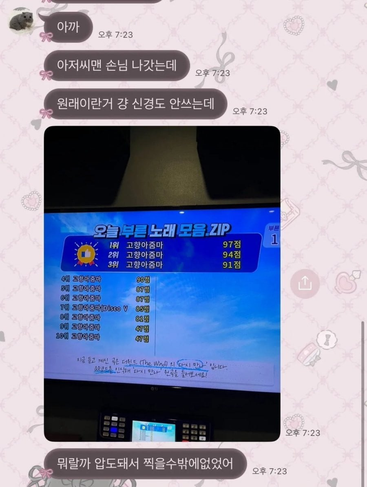

고향아줌마가 얼마나 좋았는지 감도 안 옴 ㄷㄷ;;

고향아줌마가 얼마나 좋았는지 감도 안 옴 ㄷㄷ;;
그거 아녀? 같은 노래 존나 찍어 놓고 룸에서 아가씨랑 ㅉㄱㅉㄱ 이겠구나 싶었는데 점수가 높구나
한30분만 숨참아줘
진자하게 앞자리 4이상임?
ㅋㅋㅋㅋㅋㅋㅋㅋㅋㅋㅋㅋ 사고방식이 다른거 개웃기네
그건 매들리 버전 틀어 두던데
진짜 영포티는 다르구나 ㄷㄷ
장기자랑 연습인듯 ㅋㅋㅋ
아줌마 좋아~~
연습이지 저건 ㅋㅋㅋㅋㅋ
뭐 연습하나봄. 아는 형이 축가 부른다고 저런거 봤음
중간에 디스코버전ㅋㅋㅋ
이런것도 소스로 도는구나
몇주전에 해병가인가 그거로봤는데
아줌마 좋아 중년 ㅋㅋ
장기자랑나가시는거지 ㅋㅋ
마지막 두곡은 왜케 점수 낮지?? 목에 무리온건가?ㅋ
나도 축가연습할때 친구랑 저랬음
그리고 개처망함ㅋㅋ
어디 사내 장기자랑 같은거 나가시려나?